[6-1] TIM定时中断 — 学习笔记
- 课程：江协科技《STM32入门教程-2023版 细致讲解 中文字幕》
- 视频：BV1th411z7sn?p=13，49:37（约 2977 秒）
- 素材：248 帧关键帧（每 12 秒，宽 1280px）+ PP-OCRv4 画面硬字幕 OCR（623 段）；关键截图 16 张随笔记收录（源图在
vidsum_out/stm32_p13/frames/，站内图片在assets/images/stm32-13/） - 字幕情况：该集 B 站没有 CC/AI 字幕，文本由画面烧录的中文字幕 OCR 得到（source=subtitle-ocr），偶有错字已按画面校正（清单见文末「存疑」）。
- 本集定位：这是定时器部分的**「现象 + 理论」课**——片头 01:36–03:00 演示两个已经写好的工程的现象（6-1 定时器定时中断、6-2 定时器外部时钟），之后 03:00–49:37 全是 PPT 与参考手册的理论讲解，没有新建工程、没有写代码、也没有讲 TIM 库函数。视频结尾原话是「本小节的内容就全部完成了，我们下一小节来开始写定时中断和内外时钟源选择的代码」。因此本笔记不包含
TIM_TimeBaseInit/TIM_ITConfig/NVIC等初始化步骤和中断服务函数的写法，那些在下一集 [6-2]。
一句话结论
定时器（TIM = Timer）本质上就是一个计数器：给它喂一个已知频率的基准时钟，数到设定的个数就产生一次中断，数时钟的过程就是计时——72MHz 数 72 个是 1μs、数 72000 个是 1ms。STM32 的定时器用 PSC 预分频器 + CNT 计数器 + ARR 自动重装寄存器三个 16 位寄存器组成时基单元，预分频器把 72MHz 先分频（实际分频系数 = PSC+1）得到计数频率，计数器每来一个计数时钟加 1，加到等于 ARR 时产生更新事件与更新中断、计数器清零重新开始，于是溢出频率是 72MHz/(PSC+1)/(ARR+1)、溢出时间的倒数就是定时周期；三个 16 位寄存器都拉满时最大定时 59.65s，定时器级联还能长到离谱（两个约 8000 多年，三个约 34 万亿年）。定时器分高级 TIM1/TIM8（APB2）、通用 TIM2～TIM5、基本 TIM6/TIM7（都挂 APB1）三类且向下兼容，F103C8T6 只有 TIM1～TIM4（1 个高级 + 3 个通用、没有基本定时器）；时钟源除了内部 72MHz 还能选外部时钟模式 2（ETR 引脚）、外部时钟模式 1（TRGI：其它定时器/输入捕获通道）和编码器模式；而「为什么 APB1 只有 36MHz，定时器却还是 72MHz」的答案就在 RCC 时钟树那条「APB1 预分频系数≠1 则定时器时钟 ×2」的支路上。
0. 本集定位：现象 + 理论，代码在下一集
- 本集是定时器大节的第一部分（基本定时功能）的第 1 小节，对应 PPT 的
06-TIM定时器。整个定时器大节分 4 部分 8 小节：第一部分讲定时中断和内外时钟源选择（本集 [6-1] 理论 + 下一集 [6-2] 代码），第二部分讲输出比较（驱动舵机、直流电机），第三部分讲输入捕获和主从触发模式（测方波频率），第四部分讲编码器接口（更方便地读正交编码器、编码电机测速）。 - 全片结构：01:36–03:00 两个现成工程的现象演示 → 03:00–49:37 PPT 理论（简介 → 类型 → 三个结构图 → 定时中断基本结构 → 时序图 → RCC 时钟树）→ 结尾参考手册导读。
- 本集没有代码过程：片头两个工程是现成的（Keil 标题栏里的工程目录名分别是
6-1 定时器定时中断和6-2 定时器外部时钟），第 1 章里那张 main.c 截图只是让你看清「现象是怎么来的」，不是本集讲过的代码写法。 - 特别提醒：本集没有讲 TIM 的库函数。全片只在讲时钟树时说了一句「这就是我们在程序中写
RCC_APB1/2PeriphClockCmd作用的地方」——那也只是指作用位置，不是用法讲解。TIM_TimeBaseInit、TIM_ITConfig、NVIC配置等全部在 [6-2]。
1. 片头两个现象
第一部分一共两个程序，先用现成工程看现象。
1.1 程序 1：定时器定时中断（工程 6-1 定时器定时中断）
- 面包板上一块 STM32 最小系统板 + OLED 屏。
- 使用的是定时中断功能：定时器使用内部时钟定了一个 1 秒的时间，每隔 1 秒申请一次中断，在中断函数里执行
Num++，最后在 OLED 上显示Num。 - 画面里 OLED 显示
Num:00009，说明程序已经跑了 9 秒多——数字每秒自己加 1，不用主程序做任何事。 - 这个工程的 main.c 很能说明「定时中断」的用法：
OLED_Init()、Timer_Init()之后死循环里只做一件事——OLED_ShowNum(1, 5, Num, 5)，计数的活全交给定时器的中断函数（本集不写这段代码，[6-2] 才写）。
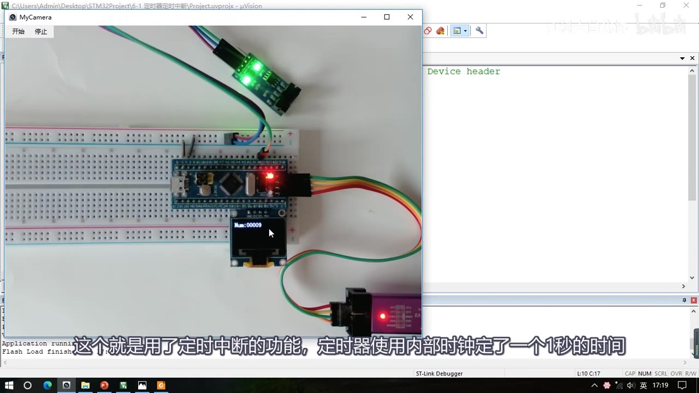
图 1：现象①定时器定时中断——面包板上的 STM32 与 OLED，内部 72MHz 时钟定时 1 秒，每进一次更新中断 Num++，屏幕显示 Num:00009
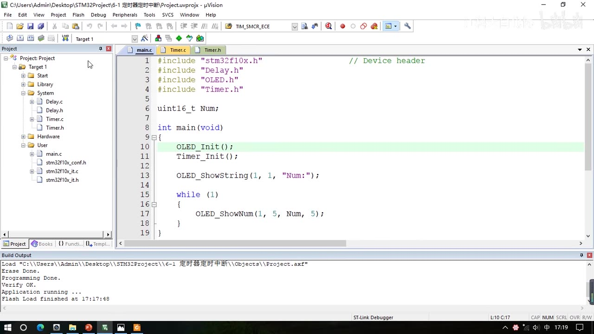
图 2：现象①工程 6-1 定时器定时中断 的 main.c——全局变量 Num、Timer_Init() 初始化定时器，主循环里只调 OLED_ShowNum 显示 Num（现成工程，本集不写代码）
1.2 程序 2：定时器外部时钟（工程 6-2 定时器外部时钟）
- 这个程序使用外部时钟来驱动定时器：在定时器指定的外部引脚上输入一个方波信号，用它来提供定时器计数的时钟。
- 演示时暂时用对射式红外传感器来手动模拟一个外部时钟：拿挡光片依次遮挡、移开、遮挡、移开，就提供了一个方波。
- OLED 上除了 Num，下面还多显示一个 CNT，CNT 就是定时器里计数器的值。每遮挡、移开一次，计数器加 1；计数器计到 9 之后自动清 0，同时申请一次中断执行
Num++。 - 所以外部时钟的两个用途：一是提供一段更加精准的时钟来计时；二是把外部时钟当做一个计数器，用来统计引脚上电平翻转的次数——毕竟定时器本质就是一个计数器。
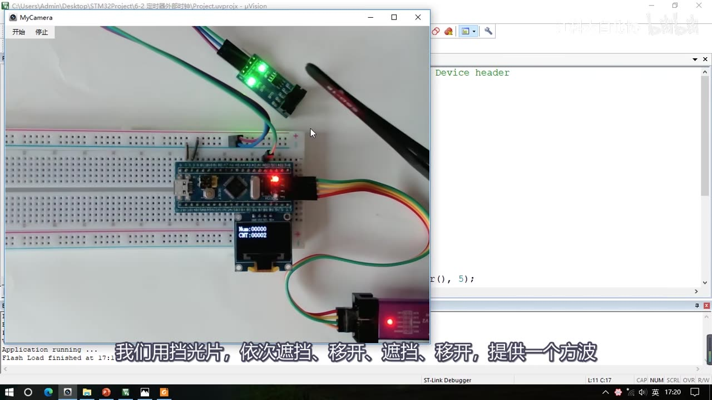
图 3：现象②定时器外部时钟——对射式红外传感器接在定时器外部引脚上，挡光片一挡一移产生方波，OLED 显示 Num 与 CNT:00002
2. TIM 简介
2.1 定时器就是计数器
- TIM 是英文 Timer 的缩写，意思是定时器。
- 基本功能：定时器可以对输入的时钟进行计数，并在计数值达到设定值时触发中断。 也就是「定时触发中断」。
- 由此可以看出来：定时器就是一个计数器。当这个计数器的输入是一个准确可靠的基准时钟时，对它计数的过程实际上就是计时的过程。
- 换算举例（在 STM32 里定时器的基准时钟一般都是主频 72MHz）：
- 对 72MHz 计 72 个数，就是 1MHz，也就是 1μs 的时间；
- 计 72000 个数，就是 1kHz，也就是 1ms 的时间。
2.2 时基单元与最大定时时间 59.65s
- STM32 的定时器拥有 16 位计数器、预分频器、自动重装寄存器的时基单元，在 72MHz 计数时钟下可以实现最大 59.65s 的定时。
- 三个都是 16 位：2¹⁶ = 65536。如果预分频器设置最大、自动重装也设置最大，最大定时时间就是 65536 × 65536 / 72MHz ≈ 59.65s（把溢出频率取倒数得到），接近一分钟。
- 嫌不够长还能级联：一个定时器的输出，当做另一个定时器的输入。级联两个，最大定时就是 59.65s × 65536 × 65536，大约 8000 多年；再级联一个又乘一次 65536 × 65536，大约 34 万亿年——指数爆炸。视频里调侃：小 STM32 三个定时器级联，就有「丈量宇宙年龄」的能力。
2.3 定时器不只会定时
- STM32 的定时器不仅具备基本的定时中断功能，而且还包含内外时钟源选择、输入捕获、输出比较、编码器接口、主从触发模式等多种功能。
- 原因：定时器的基本结构非常通用，很多模块电路都能用到，所以 STM32 在它上面扩展了非常多功能。本大节的四部分就是把这几块功能拆开讲。
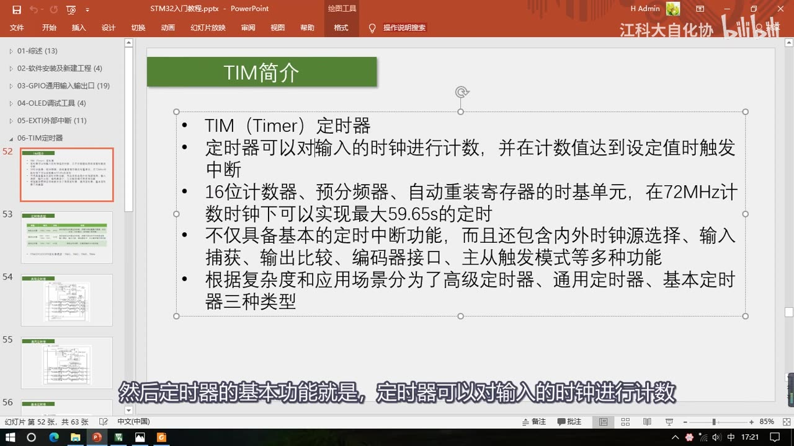
图 4：TIM 简介 PPT——定时器对输入时钟计数、到设定值触发中断；16 位计数器/预分频器/自动重装寄存器的时基单元，72MHz 下最大 59.65s；还有内外时钟源选择、输入捕获、输出比较、编码器接口、主从触发模式；分高级/通用/基本三类
3. 定时器类型与芯片资源
3.1 三种类型对照表
STM32 的定时器根据复杂度和应用场景分为高级定时器、通用定时器、基本定时器三种：高级最复杂、通用中等复杂且最常用、基本最简单。课程主要讲通用定时器。
| 类型 | 编号 | 总线 | 功能 |
|---|---|---|---|
| 高级定时器 | TIM1、TIM8 | APB2 | 拥有通用定时器全部功能，并额外具有重复计数器、死区生成、互补输出、刹车输入等功能 |
| 通用定时器 | TIM2、TIM3、TIM4、TIM5 | APB1 | 拥有基本定时器全部功能，并额外具有内外时钟源选择、输入捕获、输出比较、编码器接口、主从触发模式等功能 |
| 基本定时器 | TIM6、TIM7 | APB1 | 拥有定时中断、主模式触发 DAC的功能 |
- 编号和类型的对应关系要熟悉：同一个芯片一般有很多个定时器，所以 TIM 后面会跟一个数字——TIM1 和 TIM8 是高级定时器；TIM2、3、4、5 是通用定时器；TIM6 和 TIM7 是基本定时器。
- 总线要记住：高级定时器连接的是性能更高的 APB2 总线；通用定时器和基本定时器连接的是 APB1 总线——这在 RCC 开启时钟的时候要注意一下。
- 功能是向下兼容的：高级定时器拥有通用定时器的全部功能，通用定时器又有基本定时器的全部功能，所以学会了通用定时器，再看高级和基本定时器就都没问题了。
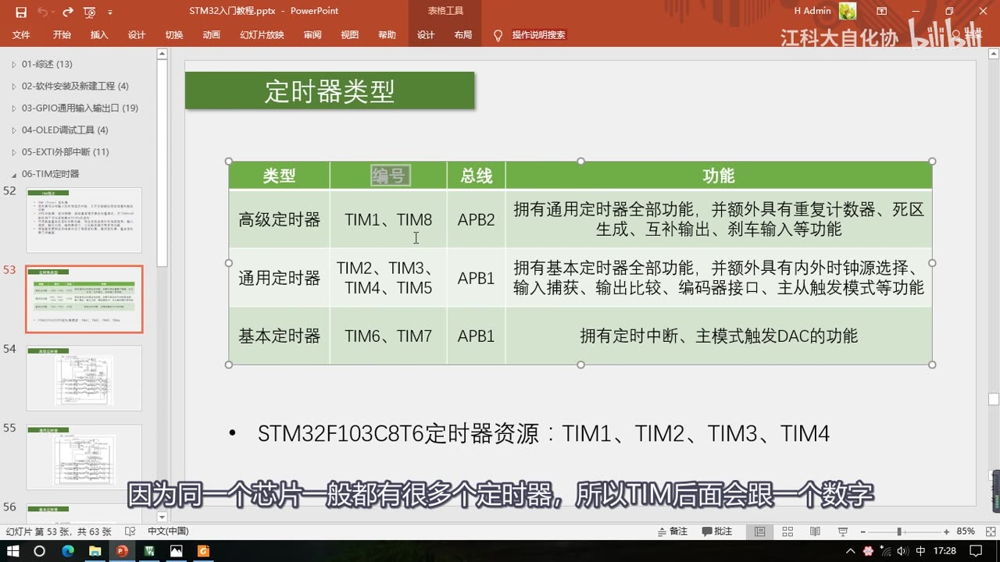
图 5：定时器类型 PPT——高级 TIM1/TIM8 挂 APB2（通用全部功能 + 重复计数器、死区生成、互补输出、刹车输入）；通用 TIM2～TIM5、基本 TIM6/TIM7 挂 APB1；STM32F103C8T6 的资源是 TIM1～TIM4
3.2 F103C8T6 的定时器资源
- 对于 STM32F103C8T6 这款芯片，它内部拥有的定时器资源是 TIM1 到 TIM4，也就是一个高级定时器和三个通用定时器，没有基本定时器。
- 不同的型号，定时器数量是不同的。使用这个外设之前，一定要查一下它是不是有这个外设，别操作到了不存在的外设，那样是不会起作用的。
3.3 高级定时器的结构升级
对比通用定时器的结构，左上那一大部分都没有变化，主要改动在右边这几块：
- 重复次数计数器：在「申请中断」的地方增加了一个重复次数计数器。有了这个计数器，就可以实现每隔几个计数周期才发生一次更新事件和更新中断——原来的结构是每个计数周期完成后都会更新，现在相当于对输出的更新信号又做了一次分频。对高级定时器来说，之前算的最大定时时间 59 秒多，在这里就还需要再乘一个 65536，定时时间又提升了很多。
- 输出比较模块的升级：DTG（Dead Time Generate）是死区生成电路，右边输出引脚由原来的一个变为了两个互补的输出，可以输出一对互补的 PWM 波。这些电路是为了驱动三相无刷电机——三相无刷电机比较常用，四轴飞行器、电动车的后轮、电钻等里面都可能是它。三相无刷电机的驱动电路一般需要 3 个桥臂、每个桥臂 2 个大功率开关管，总共需要 6 个，所以这里输出 PWM 引脚的前三路变为互补输出，第四路却没什么变化——因为三相电机只需要三路。
- 死区的作用：为了防止互补输出的 PWM 驱动桥臂时，在开关切换的瞬间由于器件的不理想造成短暂的直通现象，前面加上了死区生成电路，在开关切换瞬间产生一定时长的死区，让桥臂的上下管全都关断，防止直通。
- 刹车输入（BKIN，Break In）：为了给电机驱动提供安全保障。如果外部引脚 BKIN 产生了刹车信号，或者内部时钟失效产生了故障，控制电路就会自动切断电机的输出，防止意外发生。（后面讲 RCC 时会看到，这个刹车输入也接了 CSS 时钟安全系统。）
- 这些功能主要是为三相无刷电机的驱动设计的，本课程暂时不会涉及到（高级定时器还有一些没详细介绍的内容，后续课程再说），简单说一下、有个印象就行，现在还不必深入了解。
4. 时基单元与基本定时器结构
先看最简单的基本定时器（手册图 144 基本定时器框图）：它能完成定时中断和主模式触发 DAC两件事。
4.1 三个最重要的寄存器组成时基单元
- 图中第一部分有三个最重要的寄存器：预分频器（PSC）、计数器（CNT）、自动重装寄存器（ARR）。它们构成了最基本的计数计时电路，所以这块电路就叫做时基单元。
- 预分频器之前连接的就是基准计数时钟的输入。由于基本定时器只能选择内部时钟，可以认为这根线直接连到了输入端的内部时钟 CK_INT；内部时钟的来源是
RCC TIMxCLK，频率一般就是系统主频 72MHz，所以通向时基单元的计数基准频率就是 72M。
4.2 预分频器 PSC：实际分频系数 = 值 + 1
- 预分频器可以对 72MHz 的计数时钟进行预分频：
- 寄存器写 0，就是不分频（1 分频），输出频率 = 输入频率 = 72MHz；
- 写 1，就是 2 分频，输出 = 72MHz/2 = 36MHz；
- 写 2，就是 3 分频，输出 = 72MHz/3，以此类推。
- 所以 预分频器的值和实际的分频系数相差了 1：实际分频系数 = 预分频器的值 + 1。
- 预分频器是 16 位的，最大值可以写 65535，也就是 65536 分频。
4.3 计数器 CNT 与自动重装寄存器 ARR
- 计数时钟每来一个上升沿，计数器的值就加 1。计数器也是 16 位的，值可以从 0 一直加到 65535；如果再加，计数器就会回到 0 重新开始。所以计数器的值在计时过程中会不断自增运行。
- 当自增运行到目标值时产生中断，就完成了定时的任务。所以还需要一个存储目标值的寄存器，那就是自动重装寄存器 ARR。
- 自动重装寄存器也是 16 位的，它存的就是我们写入的计数目标值。运行过程中计数值不断自增，自动重装值是固定的目标；当计数值等于自动重装值时（也就是计时时间到了），它就会产生一个中断信号，并且清零计数器，计数器自动开始下一次的计数计时。
- 图上那个向上的折线箭头就代表这里会产生中断信号。
4.4 更新中断与更新事件
- 这种「计数值等于自动重装值产生的中断」一般叫做**「更新中断」。更新中断之后就会通往 NVIC**，我们再配置好 NVIC 的定时器通道，定时器的更新中断就能得到 CPU 的响应了。
- 图上向下的箭头代表这里会产生一个事件，对应的事件叫做**「更新事件」**。更新事件不会触发中断，但可以触发内部其他电路的工作。
- 以上就是定时器定时中断的全部流程：从基准时钟 → 预分频器 → 计数器；计数器计数自增，同时不断地与自动重装寄存器进行比较；它俩值相等时（即计时时间到），产生一个更新中断和更新事件；CPU 响应更新中断，就完成了定时中断的任务。
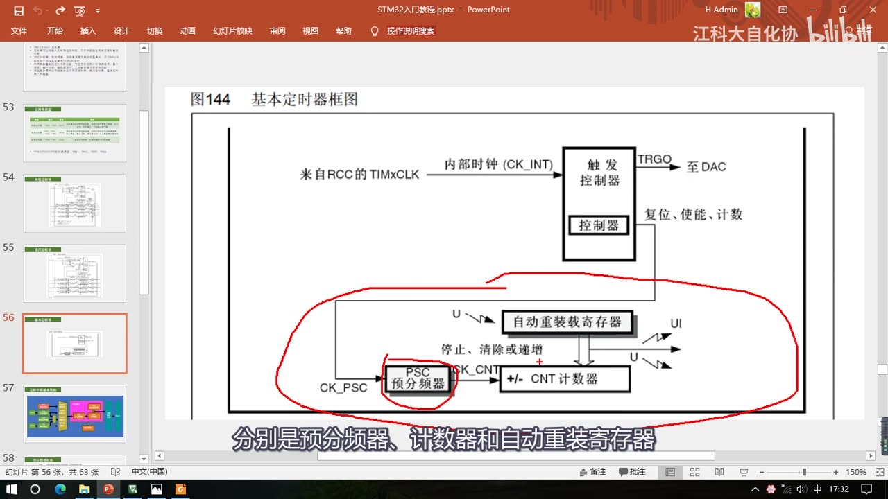
图 6：手册图 144 基本定时器框图——来自 RCC 的 TIMxCLK 经内部时钟 CK_INT 进触发控制器；红圈部分就是 PSC 预分频器、CNT 计数器、ARR 自动重装寄存器组成的时基单元（红圈并标出 U/UI 更新事件与更新中断）
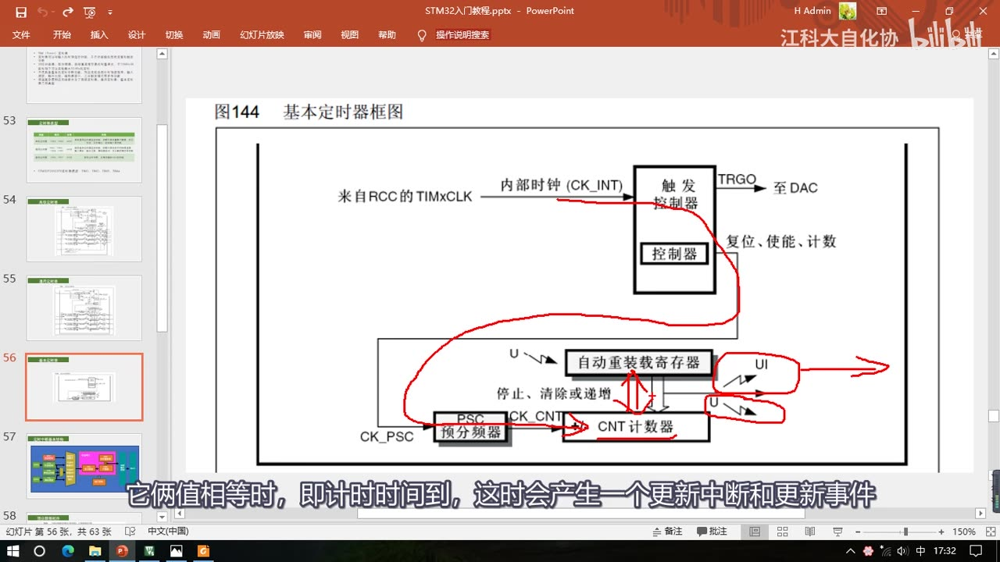
图 7：更新中断与更新事件——红箭头画出「计数值 = 自动重装值」的时刻，此时同时产生更新中断（UI，向上箭头）和更新事件（U，向下箭头）
4.5 主模式触发 DAC（TRGO）
- 主从触发模式是 STM32 定时器的一大特色：它能让内部的硬件在不受程序的控制下自动运行；如果能把这个主从触发模式掌握好，在某些情景下会极大地减轻 CPU 的负担。
- 基本定时器的主模式触发 DAC 有什么用：用 DAC 输出一段波形时，如果用正常的思路，就是先设置一个定时器产生中断，在中断里再触发 DAC 转换——这样也能做，但会让主程序处于频繁被中断的状态，影响主程序运行和其他中断的响应。
- 所以定时器设计了一个主模式：可以把这个定时器的更新事件映射到「触发输出 TRGO（Trigger Out）」的位置，然后 TRGO 直接接到 DAC 的触发转换引脚上。这样定时器的更新就不需要再通过中断来触发 DAC 转换，整个过程不需要软件的参与，实现了硬件的自动化。
- 除了主模式，还有更多硬件自动化的设计（后续再讲）。
5. 计数模式
前面解释时用的都是向上计数模式：计数器从 0 开始向上自增，计到重装值，清零同时申请中断，然后开始下一轮，依次循环。
| 计数模式 | 工作过程 | 谁支持 |
|---|---|---|
| 向上计数 | 从 0 开始向上自增，计到 ARR 时清零并申请中断，循环 | 基本 / 通用 / 高级 |
| 向下计数 | 从重装值开始向下自减，减到 0 时回到重装值并申请中断，循环 | 通用 / 高级 |
| 中央对齐 | 从 0 开始向上自增，计到重装值申请一次中断；再向下自减，减到 0 再申请中断，循环 | 通用 / 高级 |
- 基本定时器仅支持向上计数这一种模式；通用定时器和高级定时器支持向上、向下、中央对齐这三种模式。
- 模式虽然多，但最常用的还是向上计数模式，其他两种了解一下、主要掌握向上计数就行。
6. 时钟源
6.1 通用定时器框图：多了时钟源和捕获/比较
- 到通用定时器，结构瞬间复杂了很多。中间最核心的部分还是时基单元，结构和基本定时器一样（预分频器、计数器、自动重装寄存器），工作流程也一样（预分频器对时钟预分频、计数器自增计数）。
- 上面的部分是内外时钟源选择和主从触发模式的结构，下面多出输出比较和输入捕获两块电路。
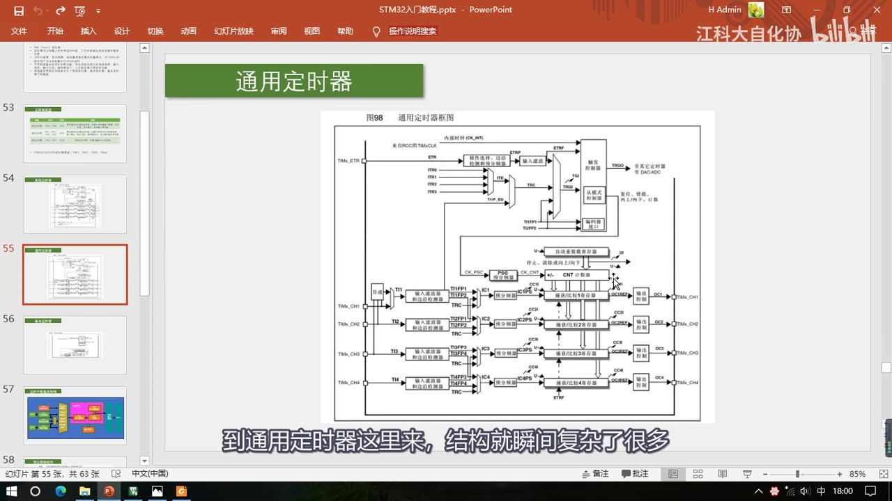
图 8：手册图 98 通用定时器框图——中间仍是 PSC/CNT/ARR 时基单元；左上为 ETR/ITRx/TIx 等外部时钟输入与主从触发；下方为 4 路输入捕获和 4 路输出比较（共用捕获/比较寄存器）
6.2 外部时钟模式 2：ETR 引脚
- 对基本定时器而言，只能选择内部时钟，也就是系统频率 72MHz；到了通用定时器，不仅可以选择内部的 72MHz 时钟，还可以选择外部时钟。
- ETR（External）引脚的位置可以参考引脚定义表：表里 PA0 这一行写着
TIM2_CH1_ETR，意思就是这个 TIM2 的 CH1 和 ETR 都复用在了 PA0 引脚上；下面还有 CH2、CH3、CH4 和其他定时器的引脚，也都能在表里找到。 - 于是可以在 TIM2 的 ETR 引脚（也就是 PA0）上接一个外部方波时钟，然后配置内部的极性选择、边沿检测和预分频器电路，再配置输入滤波电路——外部信号难免有毛刺，这些电路可以对输入的波形滤波，同时也可以选择极性和预分频。
- 最后滤波后的信号兵分两路：上面一路 ETRF 进入触发控制器，紧接着就可以选择作为时基单元的时钟了。如果要在 ETR 外部引脚提供时钟，或者想对 ETR 时钟进行计数、把这个定时器当做计数器来用，就走这一路——这一路在 STM32 里叫做「外部时钟模式 2」。
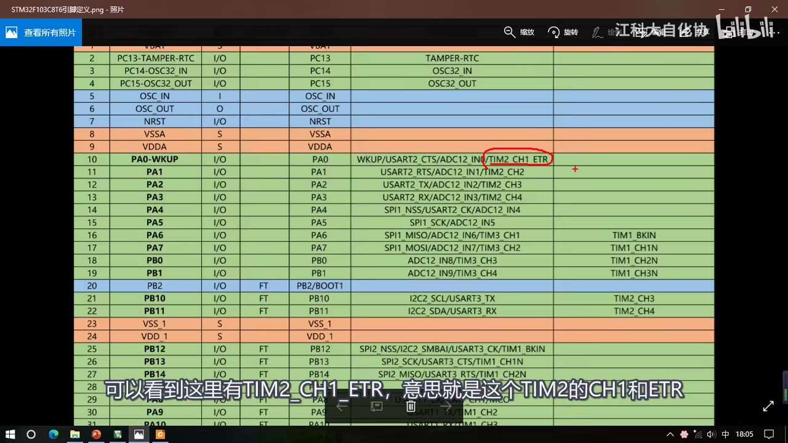
图 9：引脚定义表——红圈标出 PA0 的复用功能 TIM2_CH1_ETR，即 TIM2 的 CH1 和 ETR 都复用在这个引脚上
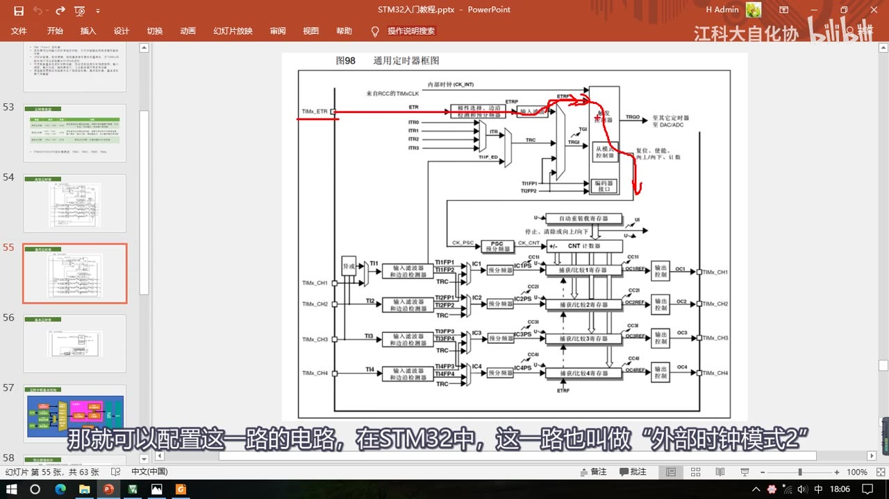
图 10：外部时钟模式 2 的路径——红箭头从 TIMx_ETR 经极性选择/边沿检测/预分频、输入滤波 → ETRF → 触发控制器，作为时基单元的时钟
6.3 外部时钟模式 1：TRGI（触发输入）
- 除了外部 ETR 引脚，还有一路可以提供时钟，就是 TRGI（Trigger In）。从名字看，它主要是用作触发输入、可以触发定时器的从模式；本小节讲的是把它当外部时钟来用的情况，你暂且就可以把这个 TRGI 当做外部时钟的输入。
- 通过这一路的外部时钟有这些来源：
- ETR 引脚的信号：ETR 既可以从上面那一路进来当时钟，也可以从下面这一路进来当时钟，两种情况对于时钟输入而言是等价的，只不过下面这一路会占用触发输入的通道。
- ITRx：来自其它定时器（级联用）。主模式的输出 TRGO 通向其它定时器时，就接到了其它定时器的 ITRx 引脚上。具体连接方式手册里有一张表——比如 TIM2 的 ITR0 是接在 TIM1 的 TRGO 上的；靠这一路就能实现定时器级联：先初始化 TIM3 选 TRGO 输出更新事件，再初始化 TIM2 选 ITR2（对应 TIM3 的 TRGO）、时钟选择外部时钟模式 1，这样 TIM3 的更新事件就可以驱动 TIM2 的时基单元。
- TI1F_ED：连接的是输入捕获单元的 CH1 引脚，后缀 ED（Edge）是边沿的意思——通过这一路输入的时钟，上升沿和下降沿均有效。
- TI1FP1：CH1 引脚的时钟；TI2FP2：CH2 引脚的时钟。
- 所以外部时钟模式 1 的输入就是：CH1 引脚的边沿、CH1 引脚、CH2 引脚，再加上 ETR 和 ITRx。设置这么复杂的输入，不仅仅是为了扩大时钟输入的范围，更多是为了某些特殊应用场景（比如定时器级联）；这些电路大概了解一下就行，对时钟输入而言最常用的还是内部的 72MHz 时钟，最简单最直接。
6.4 编码器模式
- 除了上面几种，还有编码器模式——这是编码器独用的模式，普通的时钟用不到它。
6.5 主模式输出与捕获/比较电路
- 右边这个就是定时器的主模式输出：它可以把定时器内部的一些事件映射到这里来，用于触发其它定时器、DAC 或者 ADC。可见触发输出的范围比基本定时器更广一些（基本定时器只有 TRGO→DAC）。
- 下面这部分包含两块电路：
- 右边是输出比较电路，总共 4 个通道，分别对应 CH1 到 CH4 引脚，可以用于输出 PWM 波形、驱动电机；
- 左边是输入捕获电路，也是 4 个通道，对应 CH1 到 CH4 引脚，可以用于测输入方波的频率等；
- 中间是捕获/比较寄存器，输入捕获和输出比较电路共用——因为两者不能同时使用，所以寄存器和引脚都是共用的。
7. 定时中断基本结构
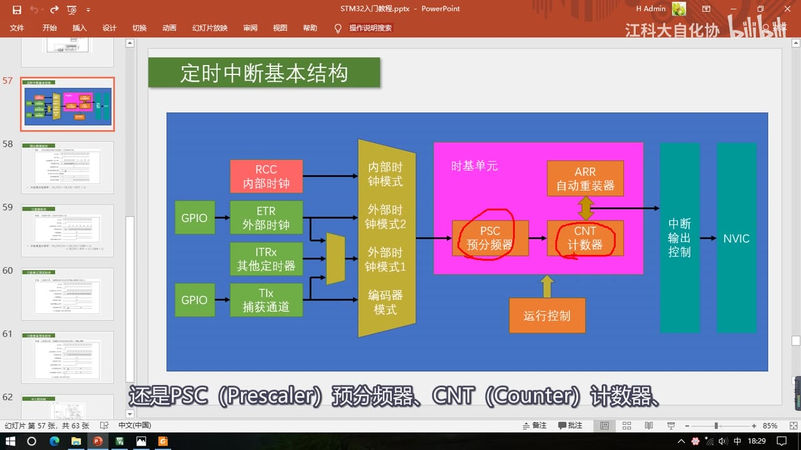
图 11：定时中断基本结构（作者重画的简化图）——左：RCC 内部时钟 / ETR 外部时钟 / ITRx 其它定时器 / TIx 捕获通道 → 选择「内部时钟模式 / 外部时钟模式 2 / 外部时钟模式 1 / 编码器模式」；中：时基单元 PSC 预分频器 → CNT 计数器（与 ARR 自动重装器比较）+ 运行控制；右：中断输出控制 → NVIC
- 这张图把无关的东西都去掉了，另外加了一些定时器框图里没体现出来的东西，专门用来讲本小节的两个任务：定时中断和内外时钟源选择。
- 中间最重要的还是时基单元：PSC（Prescaler）预分频器、CNT（Counter）计数器、ARR（Auto Reload Register）自动重装器这三个寄存器。
- 下面是运行控制，就是控制寄存器的一些位，比如启动/停止、向上或向下计数等等；操作这些寄存器就能控制时基单元的运行。
- 左边是为时基单元提供时钟的部分：可以选择 RCC 提供的内部时钟，也可以选择 ETR 引脚提供的外部时钟模式 2；本小节第一个程序（定时器定时中断）用的就是内部时钟这一路，第二个程序（定时器外部时钟）用的就是外部时钟模式 2 这一路。此外还有 TRGI 对应的一路（外部时钟模式 1），包括 ETR 外部时钟、ITRx 其他定时器、TIx 输入捕获通道——这些就是定时器所有可选的时钟源；最后还有一个编码器模式，一般是编码器独用。
- 右边是「计时时间到、产生更新中断后」的信号去向：
- 如果是高级定时器，这里还会多一个重复计数器（本小节暂不考虑）；
- 中断信号会先在状态寄存器里置一个中断标志位，这个标志位再通过中断输出控制，到 NVIC 申请中断。
- 为什么要有中断输出控制：因为这个定时器模块有很多地方都要申请中断——不仅更新要申请中断，触发信号也会申请，还有 输入捕获和输出比较匹配时也会申请。这些中断都要经过中断输出控制：需要这个中断就允许，不需要就禁止。简单说，中断输出控制就是一个中断输出的允许位，需要某个中断时记得允许一下。
8. 时序与公式
8.1 预分频器时序（手册图 99：预分频器参数从 1 变到 2 时）
- 第一行 CK_PSC：预分频器的输入时钟，就是前面「选内部时钟」那个位置，一般是 72MHz，这个时钟在不断地运行。
- 下面 CNT_EN：计数器使能，高电平计数器正常运行，低电平计数器停止。
- 再下面是 CK_CNT：计数器时钟。开始时计数器未使能，计数器时钟不运行；使能之后时钟才开始跑。后半段预分频器系数变为 2 了（能看到 CK_CNT 的频率变成一半）。
- 在计数器时钟的驱动下，计数器寄存器跟着时钟的上升沿不断自增。中间某个位置之后，计数值变为 0——虽然图里没写，但可以推断出 ARR 自动重装值就是 FC（因为计到 FC 的下一个时钟就归零了）。当计数值计到和重装值相等，并且下一个时钟来临时，计数值才清零，同时产生一个更新事件。这就是一个计数周期的工作流程。
- 最下面三行描述的是预分频寄存器的缓冲机制：
- 预分频控制寄存器：这是供我们读写用的，它并不直接决定分频系数；
- 预分频缓冲器（影子寄存器）：这个才是真正起作用的寄存器（缓冲寄存器和影子寄存器是一个意思）；
- 预分频计数器：预分频器内部实际是靠计数来分频的（PSC=0 时一直为 0，直接输出原频率；PSC=1 时计 0、1，回到 0 时输出一个脉冲，于是输出频率是输入的 2 分频）。
- 为什么要影子寄存器：假如计数到一半时把分频值由 0 改成 1，如果立刻改变分频系数，计数频率会突然改变。有了缓冲寄存器，中途改的值不会立刻生效，而是等到本次计数周期结束、产生更新事件时，预分频寄存器的值才被传递到缓冲寄存器里、才生效。所以即使计数中途改变分频值，计数频率仍保持原来的频率，一直到本轮计数完成、下一轮计数时改变后的值才起作用。
8.2 影子（缓冲）寄存器
- 结构图里像这样带一个黑色阴影的寄存器，都有影子寄存器这样的缓冲机制：包括预分频器、自动重装寄存器和下面的捕获/比较寄存器。
- 所以 ARR 自动重装寄存器也有一个缓冲寄存器，并且这个缓冲寄存器用还是不用，是可以自己设置的（靠 ARPE 位）。
8.3 计数器时序（手册图 102）与溢出频率
- 这张图是计数器时序图，条件是内部时钟分频因子为 2（分频系数为 2）：
- 第一行内部时钟 72MHz；第二行时钟使能，高电平启动；第三行计数器时钟，因为分频系数为 2，频率是上面的 1/2；
- 计数器在这个时钟每个上升沿自增；当增到 0036 的时候发生溢出——计到 36 之后再来一个上升沿，计数器清零；计数器溢出，产生一个更新事件脉冲，另外还会置一个更新中断标志位 UIF；
- UIF 只要置 1 了就会去申请中断，中断响应后需要在中断程序中手动清零。
- 公式：计数器溢出频率 CK_CNT_OV = CK_CNT / (ARR + 1)，其中 ARR 的值也是要加 1 的。把 CK_CNT 的式子代进去：
- CK_CNT_OV = CK_PSC / (PSC + 1) / (ARR + 1)；
- 用 72MHz / (PSC+1) / (ARR+1) 就能得到溢出频率；想算溢出时间，再取个倒数就行。
- 再结合 8.1 的式子：计数器计数频率 CK_CNT = CK_PSC / (PSC + 1)。
8.4 ARR 预装（ARPE）时序
- 先看计数器无预装时序（ARPE=0）：计数器正在自增时突然把自动重装寄存器由 FF 改成 36，那么计数值的目标值就由 FF 变成了 36，所以计到 36 之后就直接更新、开始下一轮计数。
- 再看有预装时序（ARPE=1）：计数中途把计数目标由 F5 改成 36，可以看到下面有个影子寄存器，这个影子寄存器才是真正起作用的——它还是 F5，所以本轮计数的目标还是计到 F5 才产生更新事件；同时要更改的 36 才被传递到影子寄存器，在下一个计数周期这个 36 才有效。
- 所以说，引入影子寄存器的目的实际上是为了同步：让值的变化和更新事件同步发生，防止运行途中更改造成错误。
- 反例：如果在这里不用影子寄存器，F5 改成 36 立刻生效，但此时计数值已经到了 F1——F1 只能往上加，而目标值却是比它还小的 36，那它就一直加，一直加到 FFF 再回到 0、再加到 36 才能产生更新，就会造成小问题。毕竟 STM32 要考虑到各种各样的情况，所以设计得比较严谨。
| 画面 | 对应图号 | 公式/结论 |
|---|---|---|
| 预分频器时序 | 手册图 99 | CK_CNT = CK_PSC / (PSC + 1) |
| 计数器时序 | 手册图 102 | CK_CNT_OV = CK_CNT / (ARR + 1) = CK_PSC / (PSC + 1) / (ARR + 1) |
| 计数器无预装时序 | 手册图 105（ARPE=0） | ARR 改了立刻生效 |
| 计数器有预装时序 | 手册图 106（ARPE=1） | ARR 改了在下一个更新事件才生效 |
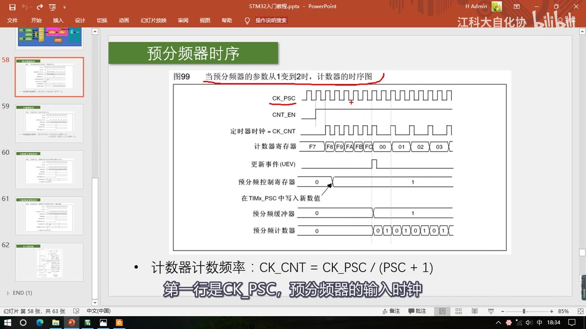
图 12：手册图 99 预分频器时序——CK_PSC、CNT_EN、CK_CNT、计数器寄存器（计到 FC 后归零）、更新事件，以及下面三行预分频控制寄存器/预分频缓冲器/预分频计数器；底部公式 CK_CNT = CK_PSC/(PSC+1)
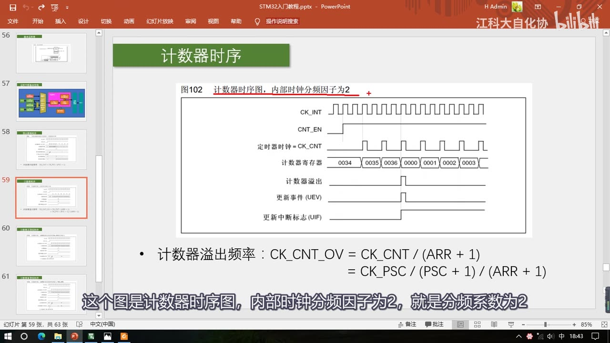
图 13：手册图 102 计数器时序（内部时钟分频因子 2）——计数器计到 0036 后溢出清零，产生计数器溢出、更新事件（UEV）和更新中断标志（UIF）；底部公式 CK_CNT_OV = CK_CNT/(ARR+1) = CK_PSC/(PSC+1)/(ARR+1)
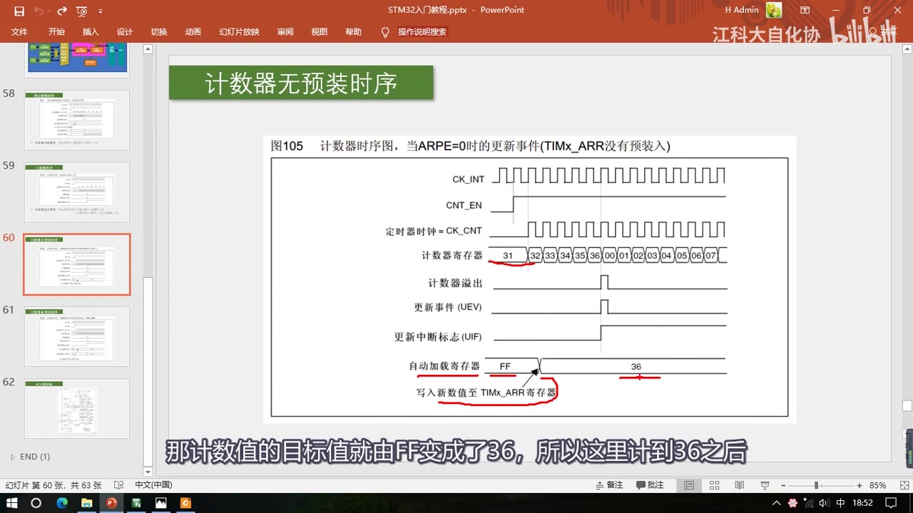
图 14：手册图 105 计数器无预装时序（ARPE=0）——计数途中把自动加载寄存器由 FF 写成 36，目标值立刻变成 36，计到 36 就清零进入下一轮
9. RCC 时钟树与「所有定时器都是 72MHz」的由来
9.1 时钟树是什么
- RCC 时钟树就是 STM32 中用来产生和配置时钟、并且把配置好的时钟发送到各个外设的系统。时钟是所有外设运行的基础，所以时钟也是最先需要配置的东西。
- 程序中主函数之前还会执行一个
SystemInit函数，这个函数就是用来配置这个时钟树的。结构看上去复杂、配置起来比较麻烦，但ST 公司已经帮我们写好了SystemInit。 - 时钟树可以从中间划一条界线：左边都是时钟的产生电路，右边都是时钟的分配电路，中间的 SYSCLK 就是系统时钟 72MHz。
- 时钟产生电路有四个振荡源：
- HSI：内部 8MHz 高速 RC 振荡器；
- HSE：外部 4–16MHz 高速石英晶体振荡器，也就是晶振，一般都是接 8MHz；
- LSE：外部 32.768kHz 低速晶振，一般给 RTC 提供时钟；
- LSI：内部 40kHz 低速 RC 振荡器，给独立看门狗（IWDG）提供时钟。
- 上面两个高速晶振是用来提供系统时钟的，AHB、APB2、APB1 的时钟都来源于这两个高速晶振。内部和外部都有一个 8MHz，都可以用；只是外部的石英振荡器比内部的 RC 振荡器更加稳定，所以一般都用外部晶振。但如果系统很简单、不需要那么精确的时钟，也可以使用内部 RC 振荡器，这样可以省下晶振的电路。
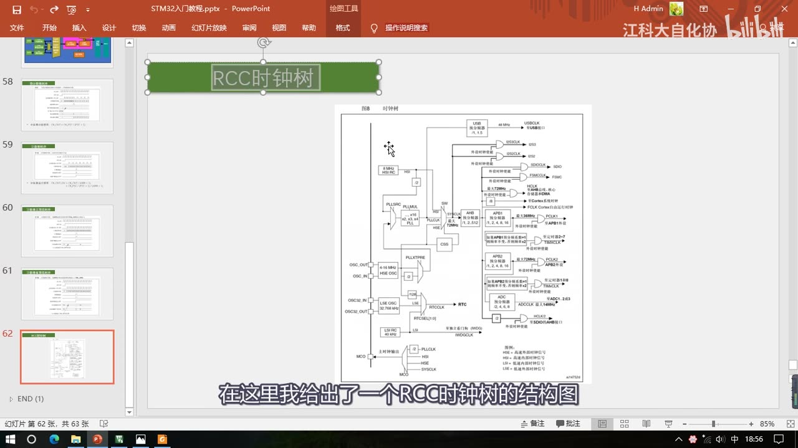
图 15：RCC 时钟树（手册图 8 时钟树）——左侧是四个振荡源 HSI 8MHz / HSE 4-16MHz / LSE 32.768kHz / LSI 40kHz 与 PLL 倍频、CSS；右侧是 SYSCLK 经 AHB/APB1/APB2 预分频分配到各外设，并单独给定时器 2～7、1 和 8 供时钟
9.2 SystemInit 里 ST 的配置流程
- 首先启动内部时钟（HSI），选择内部 8MHz 为系统时钟，暂时以内部 8MHz 运行；
- 然后启动外部时钟（HSE），配置外部时钟走 PLL 这一路，进入 PLL 锁相环进行倍频，8MHz 倍频 9 倍，得到 72MHz；
- 等到锁相环输出稳定后，选择锁相环输出为系统时钟——这样就把系统时钟由 8MHz 切换为了 72MHz。
（时间关系，视频没有带大家一步步分析 SystemInit，只讲了流程，可以自己对照源码看。）
9.3 晶振故障与 CSS 时钟安全系统
- 分析时钟树可以解决一个实际问题：如果外部晶振出问题了，会出现一个现象——程序的时钟慢了大概 10 倍。比如用定时器定一个 1s 的时间，结果过了大概 10s 才进中断。
- 原因就在这里：外部晶振出问题，系统时钟就无法切换到 72MHz，那它就会以内部的 8MHz 运行——8M 相比 72M 大概慢了 9 倍左右（视频说「大概 10 倍」）。作者就遇到过：画的板子焊接时把外部晶振的两个引脚焊短路了，把两个引脚分开时钟就正常变回 72M 了。
- CSS（Clock Security System，时钟安全系统） 也是负责切换时钟的：它可以监测外部时钟的运行状态，一旦外部时钟失效，就会自动把外部时钟切换回内部时钟，保证系统时钟的运行，防止程序卡死造成事故。
- 高级定时器的刹车输入这里也有 CSS 的身影：一旦 CSS 检测到外部时钟失效，通过或门就会立刻反应到输出比较部分，让输出控制的电机立刻停止，防止意外。
9.4 总线分频与定时器时钟 ×2
- 时钟分配电路：系统时钟 72MHz 进入 AHB 总线，AHB 总线有个预分频器，
SystemInit里配置的分频系数为 1，所以 AHB 时钟就是 72MHz。 - 然后进入 APB1 总线，这里配置的分频系数是 2，所以 APB1 总线的时钟为 72MHz/2 = 36MHz。
- 问题来了：通用定时器和基本定时器接在 APB1 上，APB1 是 36MHz，按理说它们的时钟应该是 36MHz，可前面讲定时器时一直说「所有定时器的时钟都是 72MHz」，为啥？
- 原因就在这下面的一条支路，上面写着：「如果 APB1 预分频系数 = 1 则频率不变，否则频率 ×2」。这一路是单独为定时器 2～7 开通的：这里的预分频系数给的是 2，所以频率要再 ×2，通向定时器 2～7 的时钟又回到了 72MHz。
- 结论：无论是高级定时器、通用定时器还是基本定时器，它们的内部基准时钟都是 72MHz。这给使用带来了方便——不用再考虑不同定时器的时钟不一样的问题，当然前提是你不乱改
SystemInit里的默认配置，要是改了这些时钟还得再另行分析。 - 再看 APB2 的时钟：这里给的分频系数为 1，所以 APB2 和 AHB 一样都是 72MHz；接在 APB2 上的高级定时器也单独升了一路，但 APB2 的预分频系数就是 1，所以频率不变，定时器 1 和 8 的时钟就是 72MHz。
- 在这些时钟输出这里，都有一个与门进行输出控制，控制位写的是外设时钟使能。这就是我们在程序中写
RCC_APB1/2PeriphClockCmd作用的地方——打开时钟，就是在这个位置写 1，让左边的时钟能够通过与门输出给外设（本集只指出作用位置，函数用法在下一集讲）。 - 剩下的还有一些给 ADC、SDIO 等等提供时钟的电路，自己看看就行。
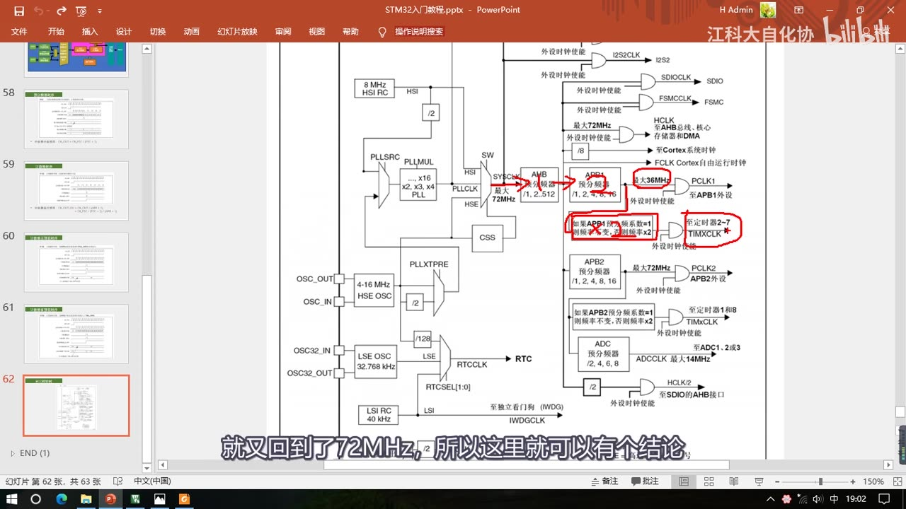
图 16：APB1 定时器 ×2 支路——红圈标出「如果 APB1 预分频系数=1 则频率不变，否则频率×2」，这一路单独给定时器 2～7 供时钟，所以 APB1 虽然 36MHz、定时器时钟仍是 72MHz
10. 参考手册导读
- 在 STM32F10xx 参考手册里，关于定时器的介绍有 3 章：高级定时器、通用定时器、基本定时器各占一章，内容非常多。
- 打开通用定时器这一章：
- 首先是简介，这里有它的一些基本描述；
- 然后下面是结构图，这个还是很重要的；
- 再下面就是功能描述：时基单元（14.3.1），里面有一些时序图，演示了预分频器的工作流程；下面用计数器的时序图这部分就比较多了——不仅有向上计数模式的更新，还有向下计数模式、中央对齐模式的；
- 再下一节是时钟选择，想深入研究的话可以再看看，里面有手册图 120 外部时钟模式 1 下的控制电路、手册图 122 外部时钟模式 2 下的控制电路等；
- 再下面就是捕获/比较通道的介绍——这个后续课程再讲。
- 手册里的时序图（预分频器缓存器被置入预装载寄存器的值、计数器寄存器、更新中断标志 UIF 等）和 PPT 上的图是一一对应的，一般向上计数用得最多。
11. 本集小结与 [6-2] 的衔接
- 定时器本质就是一个计数器：对已知频率的基准时钟计数就是计时；72MHz 计 72 个 = 1μs，计 72000 个 = 1ms。
- 时基单元 = PSC 预分频器 + CNT 计数器 + ARR 自动重装寄存器，都是 16 位：预分频器实际分频系数 = PSC + 1，计数器0～65535 自动回卷，CNT = ARR 时清零并产生更新中断/更新事件；最大定时 59.65s，级联（两个约 8000 多年、三个约 34 万亿年）。
- 三种类型向下兼容：高级 TIM1/TIM8（APB2，多重复计数器、死区生成、互补输出、刹车输入，面向三相无刷电机）、通用 TIM2～TIM5（APB1，多内外时钟源选择、输入捕获、输出比较、编码器接口、主从触发）、基本 TIM6/TIM7（APB1，只有定时中断 + 主模式触发 DAC）；F103C8T6 只有 TIM1～TIM4。
- 计数模式：基本只支持向上；通用/高级支持向上、向下、中央对齐；最常用向上。
- 时钟源：内部 RCC TIMxCLK = 72MHz（最常用）；外部时钟模式 2（ETR 引脚，如 TIM2 的 ETR 在 PA0，经极性/边沿/滤波/预分频进触发控制器）；外部时钟模式 1（TRGI：ETR、ITRx 其它定时器（可级联）、TI1F_ED、TI1FP1、TI2FP2）；编码器模式。
- 定时中断结构：时钟源 → 触发控制器 → 时基单元（PSC → CNT 与 ARR 比较）+ 运行控制 → 状态寄存器置 UIF 标志 → 中断输出控制（允许位） → NVIC；更新事件不触发中断，但可触发别的电路（如 TRGO 触发 DAC）。
- 时序与公式：CK_CNT = CK_PSC/(PSC+1)、CK_CNT_OV = CK_PSC/(PSC+1)/(ARR+1)，定时时间 = 1/溢出频率；PSC、ARR、捕获/比较寄存器都有影子（缓冲）寄存器，让改动与更新事件同步生效；ARR 的预装可由 ARPE 位选择开/关。
- RCC 时钟树：HSI 8MHz / LSI 40kHz / HSE 8MHz / LSE 32.768kHz 四个振荡源；
SystemInit走 HSI → 启动 HSE → PLL 8MHz×9 = 72MHz → 切换到 PLL 输出；晶振故障会退回 8MHz 运行，定时慢约 10 倍，CSS 负责检测并切换；AHB 72M、APB1 36M（定时器 ×2 回 72M）、APB2 72M，所以所有定时器基准时钟都是 72MHz；时钟输出处的与门就是RCC_APB1/2PeriphClockCmd控制的使能位。
下一小节 [6-2] 就是本集的理论落地：开始写「定时中断」和「内外时钟源选择」的代码——定时器初始化（时基单元 PSC/ARR、计数模式）、更新中断的配置与 NVIC、以及外部时钟模式 2 的配置，对应片头演示的两个工程。本集没有讲任何 TIM 库函数，所以上面这些寄存器概念就是下一集写代码时「为什么要这么填参数」的依据。
坑与易错点
- 预分频器是「值 + 1」才是实际分频系数：写 0 是 1 分频（不是 0 分频），写 65535 是 65536 分频；ARR 同理，算溢出频率时要 (ARR+1)。
- 「所有定时器都是 72MHz」是有前提的：前提是不改
SystemInit的默认配置。改了时钟树（比如改 APB1 分频系数或 PLL）就得重新算，别把 72MHz 当常数硬编码进所有推导。 - APB1 是 36MHz，但定时器不是 36MHz：因为那一条「APB1 预分频系数 ≠ 1 则频率 ×2」的支路单独给定时器供时钟——这是最容易懵的一点。
- 更新事件 ≠ 更新中断：更新事件不会触发中断，只是可以触发内部其它电路（如 TRGO→DAC）；要进中断还得经过「中断输出控制」这个允许位。
- UIF 需要手动清零：中断响应后要在中断程序里手动清（这是 [6-2] 写代码时的坑，先记住）。
- ARR 改值不是立刻生效的（ARPE=1 时）：走影子寄存器，要等这次更新事件后才生效；只有 ARPE=0（无预装） 才是立刻生效。改 PSC 也是一样，中途改不会立刻变计数频率。
- 基本定时器只能向上计数、只能内部时钟：别指望 TIM6/TIM7 做外部时钟或向下计数；而且 F103C8T6 根本没有基本定时器，TIM6/TIM7 在它上面不存在。
- 用外设前先查型号有没有这个外设：不同型号定时器数量不同，操作不存在的外设不会起作用。
- ETR 和 TRGI 都能进外部时钟，但不是一回事：ETR 直接那一路上来是外部时钟模式 2，从 TRGI 进来（会占用触发输入通道）是外部时钟模式 1，两者对「当时钟」是等价的。
- 外部晶振出问题 → 时钟慢约 10 倍：现象是「定时 1s 结果 10s 才进中断」，实际是退回内部 8MHz 运行；先检查晶振焊接/起振，别先去怀疑代码。
- 本集没有代码、也没有 TIM 库函数：不要在本集找
TIM_TimeBaseInit/TIM_ITConfig/ NVIC 配置的写法，那些在 [6-2]。
时间轴
| 时间 | 内容 |
|---|---|
| 0:04 | 开场：本大节学习定时器——STM32 中功能最强大、结构最复杂的外设 |
| 0:16 | 定时器大节分 4 部分 8 小节：基本定时、输出比较、输入捕获、编码器接口 |
| 0:22 | 第一部分：定时器基本定时功能，实现每隔固定时间执行一段程序（时钟、秒表都能用） |
| 0:43 | 第二部分：输出比较，驱动舵机和直流电机；1:03 第三部分输入捕获测方波频率；1:14 第四部分编码器接口 |
| 1:28 | 先看第一部分程序现象：两个程序——定时器定时中断、定时器外部时钟 |
| 1:44 | 现象①：面包板电路；定时器用内部时钟定 1 秒，每秒申请一次中断执行 Num++，OLED 显示 Num |
| 2:09 | 现象②：定时器外部时钟；在定时器外部引脚输入方波提供计数时钟 |
| 2:31 | 用对射式红外传感器手动模拟外部时钟，挡光片依次遮挡/移开提供方波 |
| 2:43 | OLED 上的 CNT 是计数器值，每遮挡移开一次加 1；计到 9 自动清 0 并申请中断 Num++ |
| 3:04 | 外部时钟可提供更精准的时钟计时，也可当计数器统计引脚电平翻转次数（定时器本质就是计数器） |
| 3:19 | 开始 PPT：TIM = Timer，基本功能是对输入时钟计数、达到设定值触发中断 |
| 3:42 | 定时器就是计数器：基准时钟 72MHz 计 72 个 = 1μs，计 72000 个 = 1ms |
| 4:18 | 16 位计数器/预分频器/自动重装寄存器时基单元，72MHz 下最大定时 59.65s |
| 5:30 | 65536×65536/72MHz 再取倒数 ≈ 59.65s（接近一分钟），这就是最大定时时间 |
| 5:39 | 定时器支持级联（一个定时器的输出当另一个的输入）：两个约 8000 多年、三个约 34 万亿年 |
| 6:30 | 定时器不只定时中断：内外时钟源选择、输入捕获、输出比较、编码器接口、主从触发模式 |
| 7:21 | 定时器分高级/通用/基本三种：高级最复杂、通用中等最常用、基本最简单 |
| 7:48 | 三种定时器介绍表：编号、总线、功能（高级 APB2，通用/基本 APB1） |
| 8:35 | 基本定时器：定时中断 + 主模式触发 DAC；9:11 通用定时器功能；9:36 高级定时器功能 |
| 9:36 | 高级定时器额外功能：重复计数器、死区生成、互补输出、刹车输入（面向三相无刷电机） |
| 10:01 | 三种定时器向下兼容；F103C8T6 资源 TIM1～TIM4（1 高级 + 3 通用，无基本），不同型号数量不同 |
| 10:54 | 基本定时器结构图：三个最重要寄存器（PSC/CNT/ARR）构成时基单元 |
| 11:27 | 基本定时器只能选内部时钟 CK_INT，来源 RCC TIMxCLK = 72MHz |
| 11:59 | 预分频器：写 0 = 1 分频、写 1 = 2 分频…实际分频系数 = 值 + 1；16 位最大 65536 分频 |
| 13:01 | 计数器：计数时钟每个上升沿 +1，16 位 0～65535 自动回卷 |
| 13:26 | 自动重装寄存器 ARR 存计数目标值，CNT = ARR 时产生中断并清零、开始下一轮 |
| 14:04 | 更新中断通往 NVIC；14:22 更新事件（向下箭头）不触发中断，可触发内部其它电路 |
| 14:35 | 定时中断全部流程串讲：基准时钟 → 预分频器 → 计数器 → 与 ARR 比较 → 更新中断/事件 |
| 15:09 | 主模式触发 DAC：靠中断触发 DAC 会频繁打断主程序，改用 TRGO 硬件自动触发 |
| 16:15 | 主模式把更新事件映射到 TRGO，TRGO 直接接 DAC 触发转换引脚，全程无需软件参与 |
| 17:02 | 通用定时器结构图：中间仍是时基单元，工作流程与基本定时器相同 |
| 17:41 | 计数模式：向上计数；18:00 向下计数；18:20 中央对齐；最常用向上计数 |
| 18:59 | 内外时钟源选择与主从触发模式：基本定时器只能用内部时钟，通用定时器可选外部时钟 |
| 19:30 | 引脚定义表：TIM2_CH1_ETR 复用在同一位置 = PA0 引脚 |
| 20:00 | 在 TIM2 的 ETR（PA0）接外部方波，配置极性/边沿检测/预分频、输入滤波 |
| 20:42 | 外部时钟模式 2：ETRF 进触发控制器，作为时基单元时钟，可用于对 ETR 计数 |
| 20:58 | TRGI（触发输入）也可当时钟，即外部时钟模式 1；输入源：ETR、ITRx、TI1F_ED、TI1FP1、TI2FP2 |
| 22:24 | 手册表：TIM2 的 ITR0 接 TIM1 的 TRGO；23:04 级联示例 TIM3 TRGO 驱动 TIM2 |
| 23:23 | TI1F_ED（CH1 引脚边沿，上升下降沿均有效）；23:45 TI1FP1 = CH1、TI2FP2 = CH2 |
| 24:30 | 这些复杂输入是为级联等特殊场景设计的，最常用的还是内部 72MHz |
| 25:21 | 主模式输出 TRGO 可触发其它定时器、DAC、ADC；下方输出比较（4 通道 PWM）与输入捕获（4 通道测频率）共用捕获/比较寄存器 |
| 27:02 | 高级定时器结构：对比通用定时器，左上部分不变，主要改动在右边 |
| 27:21 | 重复次数计数器：每隔几个计数周期才更新一次，相当于对更新信号再分频，最大定时再 ×65536 |
| 28:05 | 输出比较升级：DTG 死区生成 + 互补输出，为三相无刷电机；29:08 死区防上下桥臂直通 |
| 29:25 | 刹车输入：BKIN 引脚刹车信号或内部时钟失效时自动切断电机输出 |
| 30:02 | 定时中断基本结构图（作者重画）：时基单元、运行控制、时钟源、中断输出控制、NVIC |
| 30:49 | 两个程序的时钟来源：第一个用内部时钟，第二个用外部时钟模式 2；31:18 还外部模式 1 与编码器模式 |
| 31:37 | 更新中断去向：状态寄存器置标志位 → 中断输出控制 → NVIC；高级定时器多一个重复计数器 |
| 32:41 | 预分频器时序（手册图 99）：参数从 1 变到 2，CK_PSC/CNT_EN/CK_CNT/计数器/更新事件 |
| 33:59 | ARR 推断为 FC；计到重装值且下一个时钟才清零并产生更新事件 |
| 34:18 | 下面三行：预分频控制寄存器、预分频缓冲器（影子寄存器）、预分频计数器 |
| 34:50 | 中途改分频值不会立刻生效，要等更新事件传到缓冲寄存器，下一轮才起作用 |
| 36:21 | 公式 CK_CNT = CK_PSC/(PSC+1) |
| 36:37 | 计数器时序（手册图 102）：分频因子 2，计到 0036 溢出，下一上升沿清零 |
| 37:04 | 计数器溢出产生更新事件，置 UIF 更新中断标志位；中断响应后需手动清零 |
| 37:28 | 溢出频率 CK_CNT_OV = CK_CNT/(ARR+1) = CK_PSC/(PSC+1)/(ARR+1)，取倒数即溢出时间 |
| 38:05 | 带黑色阴影的寄存器都有影子缓冲机制：PSC、ARR、捕获/比较寄存器 |
| 39:02 | 无预装时序（ARPE=0）：ARR 由 FF 改 36 立刻生效；39:25 有预装时影子寄存器仍是 F5，下一周期才生效 |
| 39:56 | 影子寄存器的目的：让值的变化与更新事件同步，防止运行途中更改造成错误 |
| 40:49 | RCC 时钟树：用来产生/配置/分配时钟；SystemInit 配置时钟树 |
| 41:53 | 四个振荡源：HSI 内部 8MHz、HSE 外部 8MHz 晶振、LSE 32.768kHz（给 RTC）、LSI 40kHz（给看门狗） |
| 42:51 | SystemInit 流程：启动 HSI 暂用 8MHz → 启动 HSE → PLL 倍频 8MHz×9 = 72MHz → 切换到 PLL |
| 43:41 | 晶振故障 → 系统以 8MHz 运行、时钟慢约 10 倍（定时 1s 变 10s 才进中断）；作者焊短路晶振引脚的例子 |
| 44:26 | CSS 时钟安全系统：监测外部时钟，失效自动切回内部时钟；44:46 高级定时器刹车输入也接 CSS |
| 45:18 | AHB 分频 1 → 72MHz；APB1 分频 2 → 36MHz；APB2 分频 1 → 72MHz |
| 45:43 | 为什么 APB1 是 36MHz 而定时器还是 72MHz：APB1 预分频≠1 时定时器时钟 ×2 |
| 46:34 | 结论：高级/通用/基本定时器的内部基准时钟都是 72MHz（前提是不改 SystemInit 默认配置） |
| 47:06 | APB2 上的定时器 1 和 8 时钟 72MHz；47:24 时钟输出处的与门 = 外设时钟使能 = RCC_APB1/2PeriphClockCmd 作用位置 |
| 47:59 | 参考手册：定时器有 3 章（高级/通用/基本各一章）；通用定时器章的简介、结构图、时基单元、时序图、时钟选择 |
| 49:26 | 结尾：本小节内容全部完成，下一小节开始写定时中断和内外时钟源选择的代码 |
存疑
- 本集文本来自画面硬字幕的 OCR（PP-OCRv4，source=subtitle-ocr，623 段），不是 ASR。典型 OCR 错字（本集实际出现）：
申请→ 「电请」、比如→ 「此如」、功能→ 「动能」、毕竟→ 「华竟」、外部→ 「外赔/外陪」、三相→ 「言相」、SystemInit→ 「Systemlnit」、PA0→ 「PAO」、ITRx→ 「1TRx」、CK_PSC→ 「CK PSC」等，已按画面和上下文校正。另：视频 07:36 附近那一帧的画面字幕是「学会了通用定时器，再学高级定时器和基本定时器，那都应该没问题了」，而同一时刻 OCR 转写的是「其中高级定时器最为复杂…」（transcript 451.0–461.5）；画面仍是「TIM简介」PPT，定时器类型表实际出现在 08:00 左右（本笔记图 5 取自该帧）。 - 视频 32:00–49:00 一大段是手册截图，OCR 结果夹带大量手册正文乱码（如「分孩乐数力，02间的在息」「亩29调试支持(DBG」「计数器寄存器0002000100000036003500340033」等），本笔记只引用了视频口述明确讲到的部分（时基单元、时序图、时钟选择、手册图 120/手册图 122），没有把乱码当依据。
- 本集没有代码：片头两个工程（
6-1 定时器定时中断、6-2 定时器外部时钟）是现成的，第 1 章的那张 main.c 截图只是现象来源说明；全片没有讲 TIM 库函数（TIM_TimeBaseInit、TIM_ITConfig、NVIC等），也没有写代码过程。片头现象对应的代码在 [6-2]。 - 视频里「时钟慢了大概 10 倍」是口述的近似说法；按 72MHz/8MHz 精确算是 9 倍，本笔记两种说法都保留，以视频原话为准记「大概 10 倍」。
- 级联的「8000 多年」「34 万亿年」是按视频口述记录的数量级；按 59.65s × 65536² 精确乘积约 2.6×10¹¹ 秒（约 8100 年），作者说的「8000 多年」与之相符。
- 高级定时器的重复计数器、死区生成、互补输出、刹车输入本集只做了结构和用途层面的介绍（面向三相无刷电机、四轴飞行器/电动车后轮/电钻等），没有讲具体寄存器与配置方法，课程明确说本课程暂时不涉及。
- 片头 OLED 上显示的具体数值随录制时刻变化（图 1 抓到
Num:00009、图 3 抓到Num:00000 / CNT:00002），只是当时画面的瞬时值，不是固定现象。 - 定时器最大定时 59.65s 是 72MHz 下三个 16 位寄存器拉满的理论值；实际程序里「1 秒」这类定时需要自己算 PSC/ARR（[6-2] 会用）。